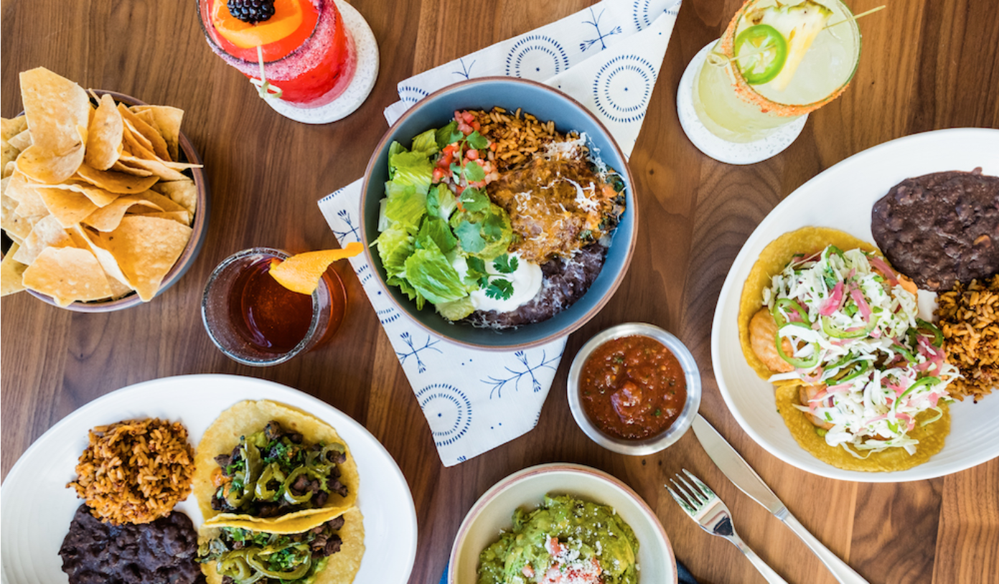

THE CULTURE
Photo via Daily News
The culture of Houston does not represent your ordinary American city. There are over 145 different languages spoken in the metropolitan area with a third of its residents being able to speak 5 other languages besides English. With cuisine from all around the world representing more than 70 countries and American
regions, Houston can be considered to have one if not the best culinary scenes in the country. There are over 10,000
restaurants to choose from varying in flavor, price, and atmosphere. Another characteristic that separates this beloved
city from the rest of the U.S is its means of transportation, its climate, and its shopping experience.
THINGS TO DO

No matter what your age is or what you consider is fun to do, Houston has something for everyone. Whether it be with alongside your significant other, a group of friends or family, Houston is bound to offer something you can all enjoy. A must-see attraction on your visit is the Houston Livestock Show and Rodeo that occurs annually. Houston is home to the world’s largest live entertainment and livestock show, that takes place late
February to mid-March.
THE CUISINE

Photo via Blanco Tacos & Tequila
Proclaimed by GQ magazine as “America’s next great food city”, Bayou City is home to one of the best culinary talent in the U.S.
Offering over 10,000 restaurants to choose from from over 70 countries, it is no wonder Houston delivers on its reputation.